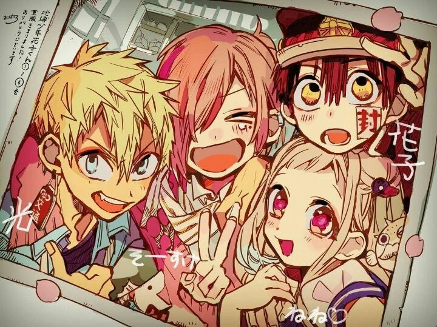

Mitsuba Sousuke
Mitsuba Sousuke, é um fantasma que assombra os armários da escola Kamome Academy. Era um estudante da Kamome Academy e foi membro do clube de fotografia antes de sua morte. Ele chegou a estudar junto com o kou Minamoto.
Mitsuba tinha 13-14 anos quendo morreu, o garoto é arrogante, desbocado, desesperado e excessivamente confiante em si mesmo, principalmente em sua aparência; ele frequentemente se gabará de como ele é fofo.Também tem a tendência de chamar as pessoas por apelidos grosseiros e não tem medo de insultar os outros; Chora rápido, especialmente em situações de ameaça.Ele não aparece muito no anime, porém no mangá ele se torna um dos personagens principais.
A aparência de Mitsuba é andrógina - muitos de seus colegas comentaram sobre sua aparência feminina. Ele tende a usar principalmente oufits rosa. Ele é um fantasma esguio e relativamente alto em idade escolar, com cabelos e olhos rosa. Ele tem uma verruga sob o olho esquerdo e tem cabelo de comprimento médio com franja que cobre o olho direito, e a parte de trás de seu cabelo geralmente é amarrada em um rabo de cavalo pequeno e curto com grampos de cabelo para cima. Ele também usa um piercing na orelha esquerda.
